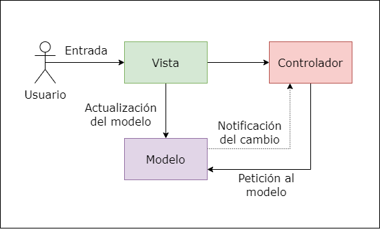

Estas son algunas de las cosas que me gustan.
Fisica.
Siempre me ha interesado mucho la física, aunque no es una área que domino ni conozco en gran
medida, si me interesa conocer lo que hay detras de los comportamientos y fenómenos de la naturaleza
Computacion
La computación siempre ha sido lo que me ha despertado gran curiosidad. Hay vareas áreas de la computación que me interesan y
que me generan genuinamente ganas de aprender. Entre ellas está el desarrollo Back-end, UX, Data Science, entre muchas otras.
Diseño y arquitectura de software
Es una de mis áreas favoritas por el desafio que conlleva diseñar con
las mejores prácticas un sistema.

Deportes
Me gusta mucho el hockey por la rapidéz de las jugadas.